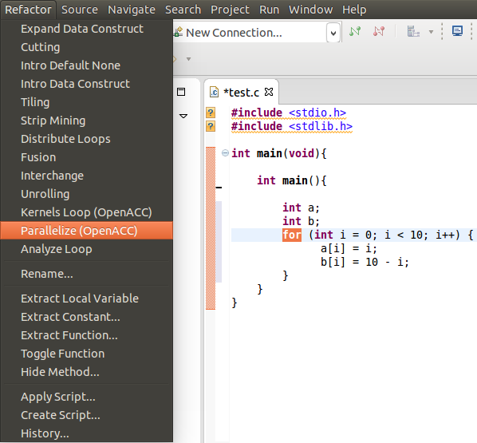
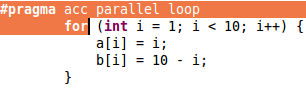

Introduce OpenACC Loop
Description:
Parallelizes a loop by adding a parallel loop directive to it.
Use:
Example:
- Select the desired for loop to be changed and choose Parallelize (OpenACC) under the Refactoring menu.

- The resulting for loop.

- If a kernel is desired please select that in pop up window. Here is the result for kernels

Restrictions:
- There must not be any dependences carried by the loop to be parallelized
- The loop may not have a pragma or kernel already attached to it.
- Kernels will throw a warnings instead of error.